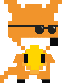

My team and I created a simple game with a unique board pattern with dice rolling as our mechanics to move. What set our game apart from the rest is that we had special rules- when two players are on the same square, if you roll certain numbers/combinations, etc.- to make the game more interesting.
We wanted each player to have a separate journey to the end, so that's exactly what we did. Each icon would represent a different player and where they will have to go-by following their icon in a clockwise direction.
During our test game, we chose for our player pieces to be dinosaurs and we had a fun time seeing the ways the pieces interacted with each other.
I wanted to create the simple game of coin collector, but I wanted to add a little bit of spice to make the game more fun. So, I took the image of the fox and made him grab a coin.

Then I thought "why not give him sumglasses?" So I did!
Here is some of my code that shows how I was able to use the updated fox image after he collected the coin! I set the image to be used for only 1 second before resetting to the original image so that the fox's hands are free to collect more coins.
if coin_collected:
score = score + 10
place_coin()
set_fox_collected()
def set_fox_collected():
fox.image= "foxcollectglasses"
clock.schedule_unique(set_fox_normal, 1)